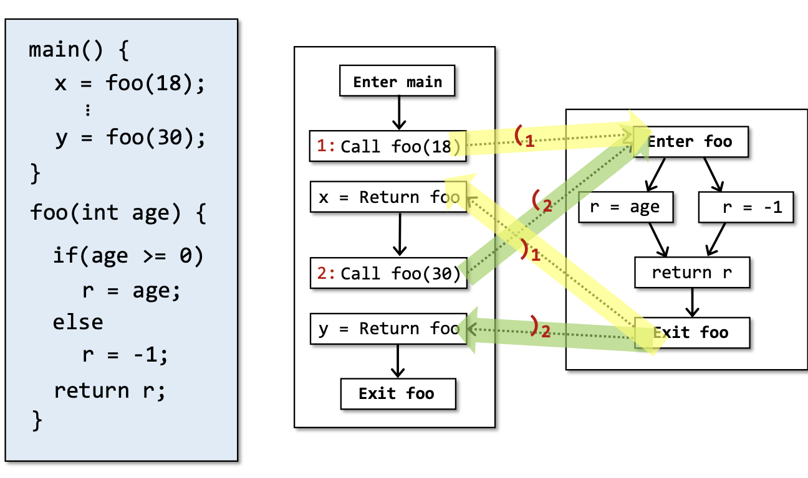
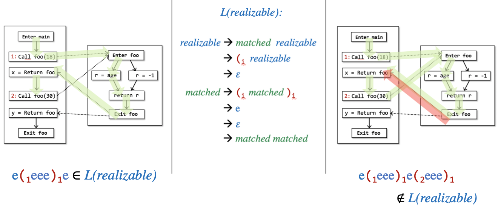

Abastract
在
IFDS出现之前，经典intra-procedural analysis框架(D,L,F)对于程序分析问题的研究还停留在①多项式时间处理specific individual problem比如constant propagation/pointer analysis②多项式时间处理locally separable proble（经典bit-vector/gen-kill问题——reaching definitions,available expressions,live variabl的过程间分析）③对普遍分析问题提供非多项式时间的算法方案。随着
POPL'1995发表的Precise Interprocedural Dataflow Analysis via Graph Reachability通过将一类inter-procedural analysis问题转化为a special kind of graph-reachability problem图可达性问题——IFDS框架横空出世。IFDS除了针对separable problems，还针对包括truly-live variables,copy constant propagation,possibly-uninitialized variablestruly-live variables在内的non-separable problems等一大类普遍性分析问题都提供了多项式时间的精确解决手段。由于IFDS本身的约束，作者在Theoretical Computer Science'1996上还发表过一篇Precise interprocedural dataflow analysis with applications to constant propagation提出IDE框架来处理interprocedural constant propagation等IFDS框架处理不了的non-distributive问题。这两篇论文为程序分析领域引入新的血液。近年
Sparse Value IFDS,Disk-Assisted IFDS等课题一直是学术界的研究热点。在工业界比如phasar等程序分析工具中IFDS/IDE也有具体实现。
CFL-Reachability
首先介绍图可达性的概念。
Feasible and Realizable Paths
过程间数据流分析真正用于工程落地之后的复杂度往往是很高的，即
ICFG的边出现路劲爆炸导致分析速度变慢。究其根本原因，是因为在这些edges中有一些属于不可达边——Infeasible paths。Paths in CFG that do not correspond to actual executions is Infeasible paths.
如果我们能够尽可能的防止
CFG被Infeasible paths所污染，让分析流图边的更加简洁，势必大大提升分析速度。但是实际情况下这种infeasible paths往往无法判定。
2
3
4
5
6
7
8
> if(age >= 0)
> r = age;
> else
> r = -1; //但是程序在静态时该条路径无法判定其可执行性
> return r;
> }
>
Realizable Paths
The paths in which "returns" are matched with corresponding "calls".
如果一条调用边，其return-edge可以正确匹配到其call-edge，则称这条边是
realizable的。既然infeasible不可判定，便引入其子集——因为realizable paths可能不会被执行到，但是unrealizable paths则一定不会被执行到，而unrealizable paths则是可判定的。
寻找这样的
realizable paths来是IFDS顺利执行的前提，下面引入一种系统的方式识别realizable paths——CFL-Reachability。
CFL-Reachabiligy
A path is considered to connect two nodes A and B, or B is reachable from A. Only if the concatenation of the labels on the edges of the path is a word in a specified context-free language.
对于A和B两个
node之间有一条path（一系列edge组成的，换句话说B可达A）并且这条path上的所有edge的labels构成的单词是由事先规定的context-free language定义好的合法单词的话，就说B is CFL-Reachable from A.context-free grammer
上下文无关语言
context-free language指的是由上下文无关文法context-free grammer产生的语言。上下文无关文法是一种形式语言用于描述某种语法，它的主要形式就是：S ⟶ 𝞪. 这是一种产生式。S代表非终结符而𝞪代表一系列终结符或者空格。比如CFG的文法如下的话：
- S ⟶ aSb
- S ⟶ ℇ
这里的𝞪就是
aSb/ℇ，上下文无关context-free的意思就是说在任何出现S的地方都可以使用aSb/ℇ来替换。Partially Balanced-Parenthesis Problem
将寻找
realizable paths抽象成为典型的括号匹配问题。这里的Partially指的是)i一定会有一个(i匹配，换句话讲就是说对于每一个return-edge都有会有一个call-edge匹配，但是每一个call-edge却不一定有返回值（比如realizable but not infeasiable paths）。问题的整个建模过程为：对control-flow graph上的所有edge都加上一个label，对于一个call语句i，其call-edge被标记为(i其return-edge被标记为)i，而其余所有的edge都被标记为e。A path is a realizable path if thee path' word is in the language L(realizable).比如
- (1(2 e )2)1(3
- (1(2 e )2)1(3 (4
- (1(2 e e e )2)1(3 (4
- e e(1(2 e e e )2)1(3 (4 e
则根据括号匹配设计的上下文无关文法如下：
realizable ⟶ mathched realizable
⟶ (i realizable
⟶ ℇ
mathched ⟶ (i mathched )i
⟶ e
⟶ ℇ
⟶ mathched matched
